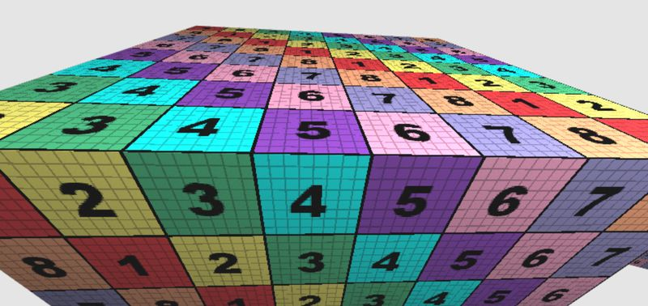
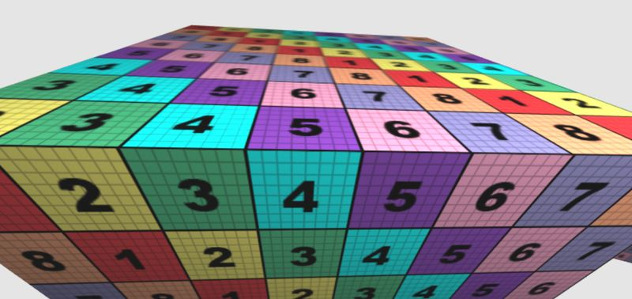
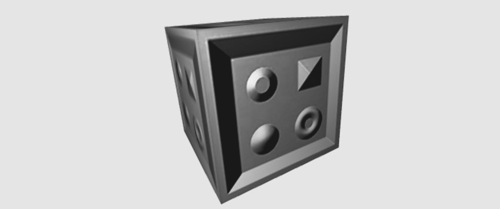
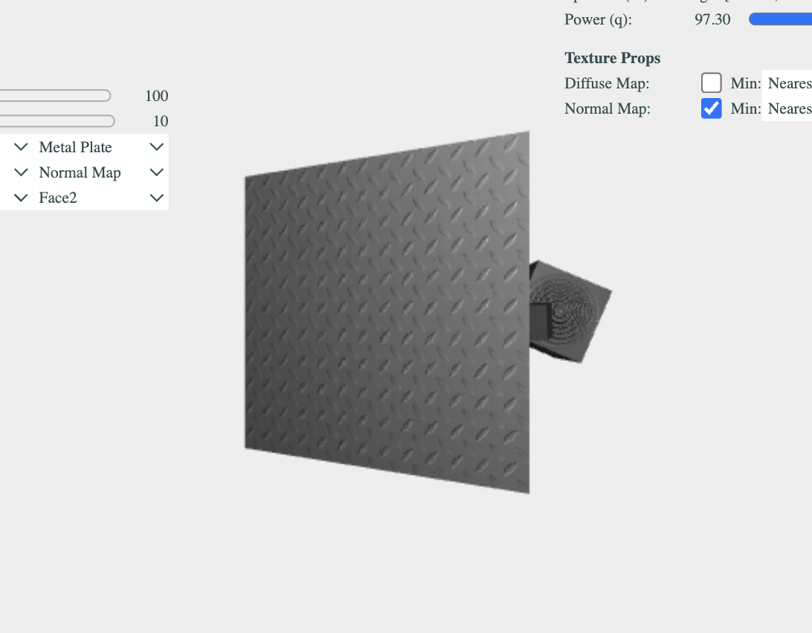

New Jersey Institute of Technology
Interactive Computer Graphics CS 438 / CS 657
Tasks
There are 4 Tasks. The HTML/JS file pair is named accordingly: (task3.html, task3.js). Additionally, there is a file containing the WebGPU shaders called resources/webgpu-task3.wgsl.
Search for TODO_A3 in task3.js, resources/geometry.js, and resources/webgpu-task3.wgsl to find the location where to implement the tasks. You will also find the instructions for each task as comments in the code.
Notes:
- The documentation (below the WebGPU canvas) of your solution also contributes to grading.
- If you have questions regarding the assignment, post them on the CANVAS forum where they will be answered.
- Do not write individual emails with assignment questions.
Hints:
- You can use the mouse to control the camera now. Left button orbits the camera around the origin, right button is used for the distance.
- If you click on the "Toggle GUI" button, you can hide (and show) the GUI elements.
1. Texture Mapping (5 points)
Task 1a: Sampling from a Diffuse Texture (3 points)
Hint: Task 1a is implemented in the file resources/webgpu-task3.wgsl using WGSL.
Implement sampling from the diffuse texture sampler. Use the u_hasSampler[0] value to decide if the kd-value should be taken from the sampler or
not. If u_hasSampler[0]==1.0, use the value from the texture as kd-coefficient. If u_hasSampler[0]==0.0, use the standard material
diffuse coefficient rgb-values. You can also blend between them.
Note: to get full points, avoid using an if-switch.
Hint: to sample from a texture in WGSL, use textureSample(...).
Task 1b: Experimenting with Texture Filtering (1 points)
In this task, use the provided texture filter method for minification and magnification to create two different texture filtering setups. You are free to choose any setup you like, however, the difference needs to be visible and well explained. Create 2 screenshots of your setups (see below), and discuss the difference between your both setups and name their pros and cons.


Task 1c: Document Your Work (1 points).
Document your work below the canvas.
2. Tangent Space Generation (10 points)
Task 2a: Per-Triangle Tangent Solve (8 points)
In this task you will implement the core tangent-space generation step in
resources/geometry.js. Search for TODO_A3 inside the
computeTS(i0, i1, i2) function.
For one triangle, compute the tangent-space directions from the vertex positions and texture coordinates. In particular, implement:
- the UV deltas,
- the position deltas,
- the determinant of the 2x2 UV system,
- the tangent vector
T, - the bitangent vector
B, - and the returned tangent-space matrix payload.
This task is the geometric foundation for normal mapping. Once this is implemented correctly, tangent-space shading can work on meshes whose tangents are computed at runtime, such as the sphere, teapot, head, and bunny.
Task 2b: Documentation and Fallback Explanation (2 points)
Document your implementation below. Briefly explain how the tangent and bitangent are computed, and state clearly how you used the cube as a fallback in case your tangent generation for the other meshes was still incomplete.
3. Normal Mapping (12 points)
Note: To see the effects of normal mapping you need to switch the shading to "Phong (Tangent Space)" in the GUI!
Task 3a: Transform to Tangent Space in VS (8 points)
Implement a transformation to tangent-space for normal mapping.
Using the supplied tangent attribute a_tangent, construct the TBN matrix. Hint: you need to compute the bitangent. Also be careful, since the
order/direction matters! Next, transform the light vector and the view vector from view-space into tangent-space in order to compute lighting in the
tangent-space. Hint: use the varyings v_lightTS and v_eyeTS to pass the values to the fragment shader.
For further reading use the resources provided in the slides.
Task 3b: Normal Sampling in FS (3 points)
Implement normal-mapping in tangent-space by appropriately sampling the value of the normal vector (vec3 N) from the normal-map texture
(u_nmSampler). Also, set the value of light-direction vec3 L and eye-direction vec3 V appropriately. These values are
further passed to the Phong function -- this function does not need to be altered since it works in either space as long as proper vectors are provided.
Account for a case, where no normal map is provided. Your program should still run smoothly. In this case the value of u_hasSampler[2] is equal to
zero. Similarly to Task 1, try to find a solution avoiding using a conditional statement (IF-switch).
If your Task 2 tangent generation is still incomplete, use the cube mesh as fallback for Task 3 testing. The cube already provides hardcoded tangent data, so you can still complete and validate the normal-mapping task there.
Your result should look like to the one below:

Task 3c: Document Your Work (1 points).
Document your work below the canvas, depending how detailed it is, you gain up to 2 points.
4. Create an Own Material (5 points)
Task 4a: Diffuse Texture (2 points)
Create or find your own diffuse texture for your material. Copy this texture to the ./textures/ folder. Further, add your texture to the Custom Material (you can rename it) in the material manager (search for TODO_A3 Task 4) in the 'task3.js' file.
Task 4b: Normal Map (2 points)
Create or find a corresponding normal map. You can use tools like Normal Map Online. Add this map to your material.
Note, that using Normal Map Online, you can create (almost) correct height maps from 4 photos with different light positions. This technique is a Computer Vision technique called Photometric Stereo or Shape form Shading.
Task 4c: Documentation (1 point)
Document your work and be creative! Include at least one representative screenshot of your own material and briefly explain the visual choices you made.
Your WebGPU Canvas
Documentation
TODO_A3: write a short report here.
It should list what you have implemented, as well as a brief discussion and your conclusions.
Also add as many comments in your code as possible---it will help
us in judging your work.
Task 1 documentation: Texture Mapping
For task 1a I used textureSample to sample the diffuse texture at the fragment's uv coordinate and then used mix() to blend between that sampled value and the material's kd color based on u_mode.z. When u_mode.z is 1 the texture is used, when it's 0 it falls back to the kd color, so no if statement needed.
For task 1b I set up two different filtering configurations to see the difference. The first one uses Nearest for both min and mag, which gives a pixelated look up close and obvious aliasing at a distance. The second uses Trilinear for min and Linear for mag, which blends the texture much more smoothly especially when the object is far away. The tradeoff is that trilinear uses mipmaps so it costs a bit more memory, but it looks a lot better in practice.
Task 2 documentation: Tangent Space Generation
For task 2a I implemented the tangent solve inside computeTS. The idea is that given the uv coordinates and positions of a triangle's three vertices, you can figure out which direction in model space corresponds to moving along U or V in texture space. I computed the uv deltas (duv1, duv2) and position edge vectors (dx1, dx2), then solved the 2x2 system by computing the determinant and applying Cramer's rule to get T and B. I also added a small guard for when the determinant is near zero so it doesn't blow up on degenerate triangles.
While working on task 3 I used the cube as a fallback since it has hardcoded tangents and skips computeTS entirely. Once the tangent solve was working I switched to the sphere and teapot and the normal mapping transferred over correctly.
Task 3 documentation
For task 3a in the vertex shader I transform the tangent attribute to view space using the normal matrix (same way as normals, w=0 since it's a direction). Then I compute the bitangent as cross(normalVS, tangentVS) to complete the TBN frame. To get the light and eye vectors into tangent space I used the fact that TBN is orthonormal so its inverse is just its transpose, meaning I can project each vector with three dot products instead of doing a matrix inverse. Those results go into lightTS and eyeTS varyings.
For task 3b in the fragment shader I sample the normal map, remap it from [0,1] to [-1,1], and use mix() to blend toward (0,0,1) when no normal map is bound (u_mode.w == 0). That fallback works correctly because (0,0,1) in tangent space is just the interpolated surface normal, so it gives the same result as regular view-space Phong. L and V come straight from the lightTS and eyeTS varyings passed from the vertex shader.
Task 4 documentation
For the custom material I was scrolling through Poly Haven and came across this metal plate texture. It's the kind of surface you see constantly in realistic FPS games like COD, on floors, walls, bunkers, all that kind of environment. I was curious how well the normal map would hold up here since the plate has these clean raised notches and panel seams, and I wanted to see if those details would still read as three dimensional under the tangent space lighting or if they'd flatten out. With the normal map enabled in Phong tangent space mode the notch detail does come through and you can see the light catching the edges of each panel as you move the light around.

Assignment Validation & Authorship
To ensure academic integrity and verify original authorship and mastery of the material, exams will include specific Validation Question. Programming assignments are assessed on both code functionality and your understanding of the implementation. To verify authorship, exams will include specific "Validation Questions" related to the logic and structure of your submitted assignments.
Penalty Policy: An incorrect answer to a validation question demonstrates a gap in understanding the submitted work. For each validation question answered incorrectly, 10% of the total points for the corresponding assignment will be retroactively deducted from that assignment's grade.
This deduction applies regardless of the original score received on the assignment. It is your responsibility to ensure you can explain and reproduce the logic of any code you submit.
Honor Code
A set of ethical principles governing this course:
- It is okay to share information and knowledge with your colleagues, but
- It is not okay to share the code,
- It is not okay to post or give out your code to others (also in the future!),
- It is not okay to use code from others (also from the past) for this assignment!
Any noticed disregard of these principles will be sanctioned as per the Academic Integrity Policy of NJIT (see below).
Academic Integrity / Institutional Policies
Academic Integrity is the cornerstone of higher education and is central to the ideals of this course and the university. Cheating is strictly prohibited and devalues the degree that you are working on. As a member of the NJIT community, it is your responsibility to protect your educational investment by knowing and following the academic code of integrity policy that is found at: http://www5.njit.edu/policies/sites/policies/files/academic-integrity-code.pdf.
Please note that it is the professional obligation and responsibility of the instructor to report any academic misconduct to the Dean of Students Office. Any student found in violation of the code by cheating, plagiarizing or using any online software inappropriately will result in disciplinary action. This may include a failing grade of F, and/or suspension or dismissal from the university. If you have any questions about the code of Academic Integrity, please contact the Dean of Students Office at dos@njit.edu.
Good Luck!
Instructor: Dr. Przemyslaw Musialski, Associate Professor
Email: przemyslaw.musialski@njit.edu
Copyright (c) 2019-2026 Przemyslaw Musialski